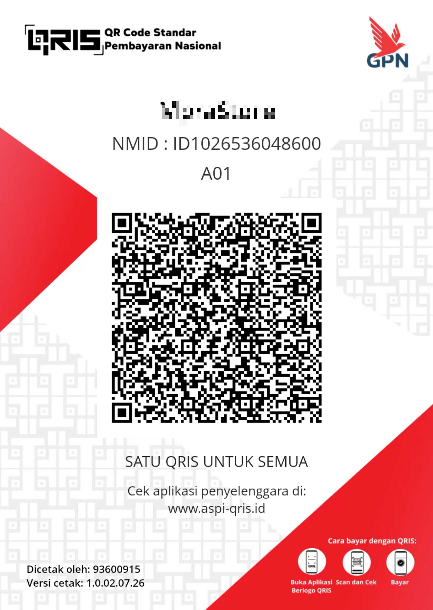

Your phone is about to stop being yours.
From September 2026, Google will roll out a silent update that blocks every Android app whose developer hasn't registered with Google, signed a contract, paid Google, and handed over a government ID.
Every app, on every device, worldwide — with no way for you to opt out.
A registration wall for every app
In August 2025, Google announced that from September 2026 every Android app developer must register centrally with Google before their software can be installed on any device — not just Play Store apps, but all apps.
This also covers apps shared between friends, distributed through F-Droid, or built by hobbyists for their own use. Independent developers, community and faith groups, and hobbyists would all be shut out of building and sharing their own software.
To register, a developer must:
- Pay a fee to Google
- Agree to Google's terms and conditions
- Hand over a government-issued ID
- Provide proof of their private signing key
- List all current and future application IDs
If a developer doesn't comply, their apps are silently blocked on every Android device, anywhere in the world.
This affects everyone who owns an Android device
You
You bought an Android phone because Google told you it was open — you could install what you wanted. That was the deal. Google is now rewriting it retroactively, on hardware you already own. After the update you can only run software Google approved in advance.
Independent developers
A teenager's first app, a volunteer's privacy tool, a company's confidential internal beta — none can be installed after September 2026 without Google's blessing. F-Droid, home to thousands of free and open-source apps, has called this an "existential" threat. Cory Doctorow calls it "Darth Android."
Governments & civil society
Google has a documented record of complying when authoritarian regimes ask for apps to be removed. Under this program, the software running your country's institutions exists at the mercy of a single, unaccountable foreign company. The EFF calls app gatekeeping "an ever-expanding pathway to internet censorship."
Google's "emergency exit" is a trapdoor
Google says "power users" can "still install" unverified apps. Here's what that actually looks like:
- 1 Open system settings and find Developer options.
- 2 Tap the build number seven times to enable developer mode.
- 3 Dismiss the coercion-warning screens.
- 4 Enter your PIN.
- 5 Restart the device.
- 6 Wait 24 hours.
- 7 Come back, dismiss more warning screens.
- 8 Choose "allow temporarily" (7 days) or "allow indefinitely".
- 9 Confirm, again, that you understand "the risks".
Nine steps. A mandatory 24-hour waiting period. To install software on a device you own.
Worse: this entire process runs through Google Play services, not the Android operating system. Google can change, tighten, or shut it down at any time, without an OS update or your consent — and to date it has not shipped in any beta, preview, or canary build. It exists only as a blog post and some mockups.
This is bigger than Android
If Google can retroactively lock down billions of devices that were sold as open platforms, every hardware maker on the planet is watching closely. The principle being established: the company that made your device gets to decide, after you bought it, which software you may run.
Android's openness was never just a feature — it was the promise that set it apart from the iPhone. Millions chose Android for exactly that reason. Google is now unilaterally revoking that promise, on devices already in people's pockets. As Ars Technica put it: "Google's jealousy of Apple threatens to dismantle Android's open legacy."
Answering the common objections
"…just a matter of security?"
The security argument is a smokescreen. Google Play Protect already scans for malware regardless of a developer's identity. Requiring an ID doesn't make code safer — it makes developers identifiable and controllable. Malware authors can simply register; indie developers and dissidents often can't. The EFF is clear: identity-based gatekeeping is a censorship tool, not a security tool.
"…still sideloading, if you use the advanced procedure?"
Nine steps, a 24-hour wait, buried in Developer options, delivered through a proprietary service Google can revoke at any moment. That isn't sideloading — it's a deterrent, built to ensure almost no one completes it. And because it runs through Play services instead of the OS, Google can quietly tighten or kill it.
"…only a problem if you have something to hide?"
Whistleblowers, journalists, and activists under authoritarian governments will be the first victims — then people in domestic-abuse situations. All of them have legitimate reasons to distribute or use software without leaving their legal identity in a Google database. Anonymous open-source contribution is a tradition older than Google itself. This policy ends it on Android.
"…the same thing Apple does?"
Apple has been a walled garden from day one. People chose Android because it was different. "Apple does it too" is a race to the bottom and a weak tu quoque argument. And under regulatory pressure (the EU's Digital Markets Act), even Apple is being forced to open up. Google is moving in the opposite direction — trying to entrench its gatekeeper status further.
"…just $25 and some paperwork?"
Maybe, if you're a US developer with a credit card and a driver's license. Try being a student in sub-Saharan Africa, a dissident in Myanmar, or a volunteer maintaining a community health app. The cost isn't only financial: you hand your ID and signing-key proof to a company that routinely complies with government requests to remove apps and unmask developers.
What you can do
Everyone
Developers
- Don't register. Don't enroll in the program or agree to its irrevocable terms. Don't verify your identity.
- Google's plan only works if developers comply. Don't.
- Talk other developers and organizations out of enrolling.
- Add a countdown banner to your website.
Google employees: if you know anything about the technical implementation or the internal deliberations, contact tips@keepandroidopen.org from a non-work machine and a non-Gmail account. Strict confidentiality guaranteed.
A growing coalition
What others are saying
"Open letter warns mandatory registration 'threatens innovation, competition, privacy and user freedom'."
Infosecurity Magazine
"Google's dev registration plan 'will end the F-Droid project'."
The Register
"Google will verify Android developers distributing apps outside the Play store."
The Verge
"Google's Attack on Sideloading Will Rob Android of One of Its Best Features."
How-To Geek
"It effectively makes the Play Store a monopoly without actually mandating that it is a monopoly."
I-Programmer
"Open-Source Android Apps at Risk Under Google's New Decree."
TechRepublic
Help keep this campaign running
This campaign is run by a non-profit community. Contributions are optional and keep the website online and independent.
Donate with PayPal Recommended
Support this independent campaign securely through PayPal. Every contribution helps keep the message visible.
Donasi via QRIS Utama
Dukung kampanye ini melalui QRIS. Scan QR di bawah menggunakan aplikasi bank atau e-wallet untuk berdonasi.

You bought your phone. You should decide what runs on it.
No nine-step process, no 24-hour wait, and no ongoing permission from Google should be required.